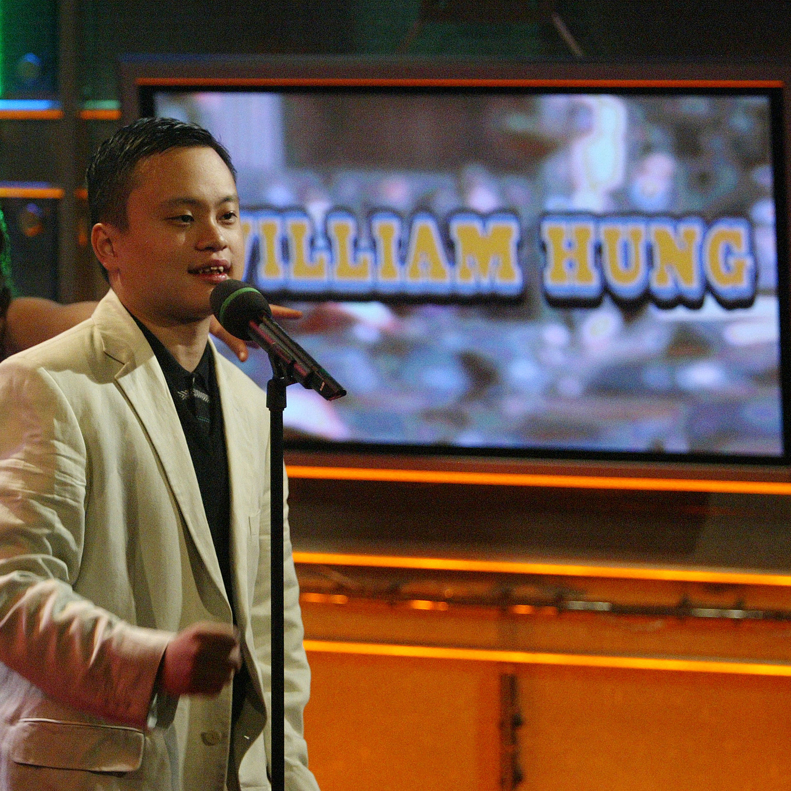

News Feed
Speaking to the Masses
William Hung spent most of his life entertaining and helping people up to his life in the sheriffs department, but even with all the gifts he had givin the world his greatest was yet to come. William Hung in the past few years started a motivational speaking business to share the art of believing that you deserve to have the success and happiness you want out of life. Willy H now spends his time sharing this lesson he learned throughout his time as a star to various tech companies. He uses his philosophy of Every chance is an opportunity, and to try your best because its okay to fail. 
Drunk and Disorganized
William recently chose to dive into some liquid courage and ended up needing to cut one of his motivational speeches short due to stumbling and slurring words! It is unclear whether he has had any speeches scheduled since this incident.
Making a Change
In 2011 Hung decided to join up with the boys in blue. He became a officer for the Los Angeles sheriffs Department, and enjoyed his time there. Fortunately Hung Realized he had something else to share with the world.
Williams Real Wild Side
William apart from his full-time work also is very involved in dog training.
Recently he has had a dog, Alburt the Bulldog, that he has trained for the 2015 and 2018 The National Dog Show we all watch on T.V. on Thanksgiving Day.
He says motivating the mind of a man is trivial to motivating the mind of the mutt.

Another Album
After his first album, Insperation, which sold two hundred thousand copies, Hung came out with his second album Miracle: Happy Summer from Hung. Sadly this album was much less sucessful only selling 7,000 copies. This made Hung re-evaluate his career and made him take a step back from the music and step into other career paths.